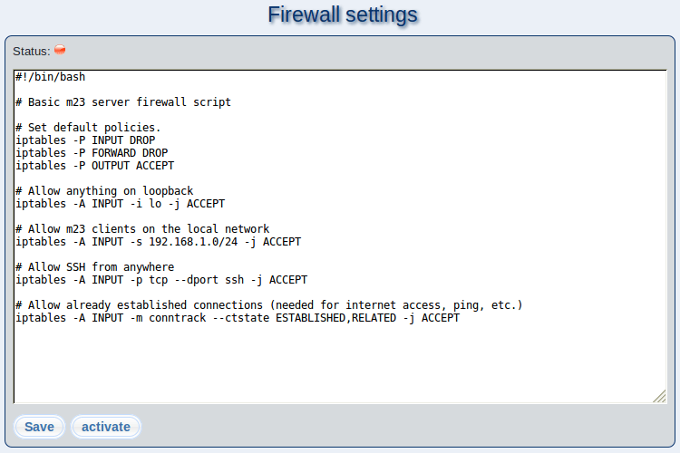

This dialog allows you to create and edit firewall rules for your m23 server. When you open this page for the first time, a set of simple firewall rules will be created, which block all access to the m23 from outside your network (except for SSH).
If your situation requires a different set of rules, you can create those using ips and paste them into the editor.
To accept the settings displayed in the editor, click on ''Save'' or ''Save and activate'', respectively. If the firewall is deactivated, the rules you set will only be saved to the file
/m23/bin/firewall.sh
. If activated, the rules will be saved and used.
The buttons ''activate'' and ''deactivate'' activate and deactivate the Firewall.
Subsections
root
2018-01-09